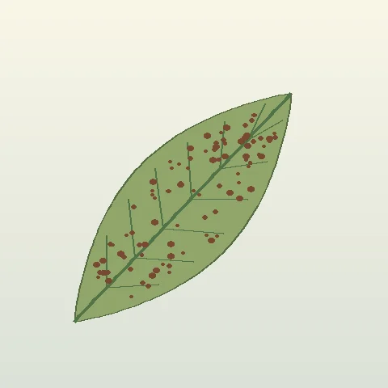

褐斑病
叶片上出现细密褐点
这是与该表现相符的一种可能原因，请结合下方特征核对。

先看哪里
用放大镜看叶背，观察细点能否擦去，并检查叶脉附近有无活动的小虫。
可能原因与下一步
细点可能来自取食、残留物或组织坏死。记录点的位置及叶背状况后再选择处理方式。
叶片上出现细密褐点
这是与该表现相符的一种可能原因，请结合下方特征核对。

用放大镜看叶背，观察细点能否擦去，并检查叶脉附近有无活动的小虫。
细点可能来自取食、残留物或组织坏死。记录点的位置及叶背状况后再选择处理方式。